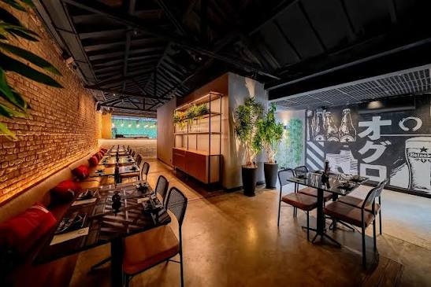
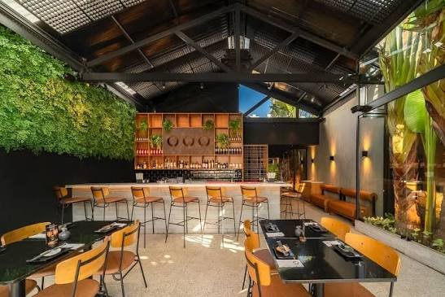
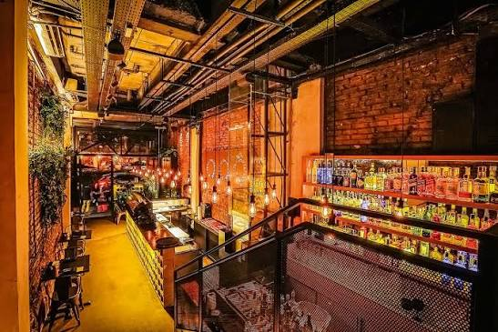

O sabor em primeiro plano.
Texturas, frescor e combinações que valorizam cada ingrediente.
MAIS QUE UMA REFEIÇÃO
Japonesa contemporânea, drinks autorais e um ambiente que faz a noite acontecer sem pressa.
Uma mesa cheia, um brinde que chega na hora certa e sabores que surpreendem. No OGURU, a experiência vai além do prato — ela acontece no encontro entre cozinha, bar e ambiente.
Conheça nossa história ↗Respeito ao produto e atenção em cada detalhe.
Coquetelaria para acompanhar o seu momento.
Industrial, verde, acolhedor — do seu jeito.
Tijolo, metal, madeira e verde convivem com uma luz quente e discreta. Um cenário que muda com a hora — e fica na memória.



A identidade visual desta proposta parte das referências de ambiente enviadas para o projeto.
SUA PRÓXIMA NOITE COMEÇA AQUI
Escolha sua unidade, chame quem você gosta e deixe o resto com a gente.
Encontre sua unidade ↗